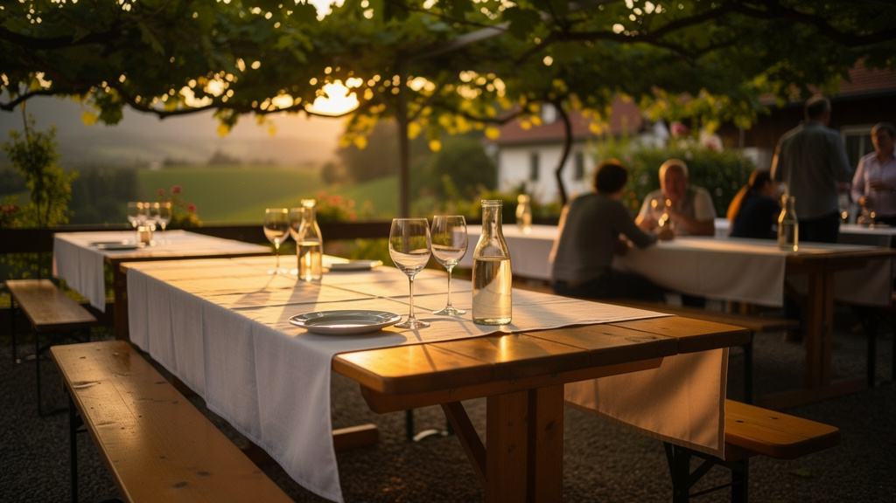
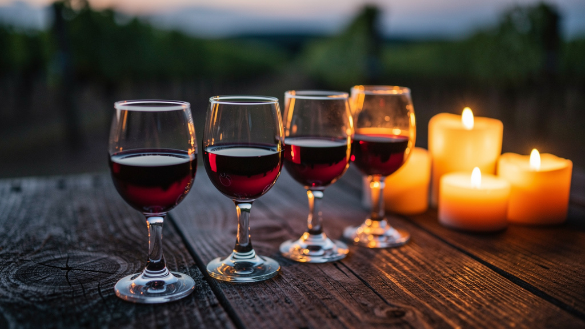
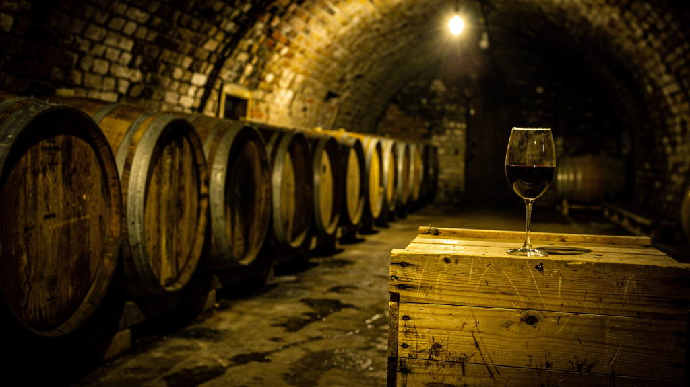
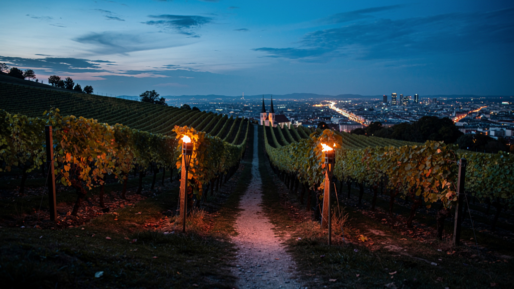

Bestellung bis 5. 11.
07.–08.November
Stelzen-Wochenende
Unsere legendären Stelzen — im Lokal oder zum Abholen. Senf, Kren, Krautsalat, Brot und Wein nach Wahl. Vorbestellung unbedingt erforderlich.

Weinbau & Heuriger · Perchtoldsdorf bei Wien
Eigener Weinkeller, Küche den ganzen Tag, Gastgarten unter den Reben und ein Blick über Wien, den man nicht vergisst. Mitten in Perchtoldsdorf, 15 Minuten von Wien.
Save the Date
Wir stecken bis zu zehnmal im Jahr aus. Diese Termine sollten Sie im Kalender haben — für die meisten empfehlen wir eine zeitnahe Reservierung.
07.–08.November
Unsere legendären Stelzen — im Lokal oder zum Abholen. Senf, Kren, Krautsalat, Brot und Wein nach Wahl. Vorbestellung unbedingt erforderlich.

KOSTBARin ROT
Blauer Portugieser, Pinot Noir, Zweigelt und Zweigelt Barrique — je 80 ml, allein oder zu zweit. Unsere Art der Weinverkostung.

28.November
Licht aus, Kerzen an: ein besinnlicher Abend mit zwei 3-Gänge-Menüs zur Wahl. Inklusive Frizzante und Gruß aus der Küche, €41 pro Menü.
Warum Neumayer
Wir verteilen Fackeln an Ihre Gäste und wandern gemeinsam in unsere Weingärten auf der Perchtoldsdorfer Heide. Oben wartet eine Erfrischung — und der Blick über ganz Wien.
Vier unserer Weine, je 80 ml, auf einem Brett serviert. Die ehrlichste Art, unseren Keller kennenzulernen — ohne Flasche kaufen zu müssen.
Auch an Tagen ohne Ausstecken müssen Sie nicht verzichten: Unser Getränkeautomat im Eingangsbereich ist rund um die Uhr zugänglich — Wein, Traubensaft gespritzt, Traubensaft pur.
Das fertig angerichtete Buffet ab 5 Personen: Klassik, Kärnten, Käse, Mediterran, Brötchen — auf Wunsch individuell zusammengestellt, mit Dessertbox.
Speisen & Wein
Vom gemischten Satz über Grünen Veltliner bis zum Zweigelt Barrique: Unsere Weine wachsen auf den Hängen über Perchtoldsdorf und werden im Haus ausgebaut. Dazu kommt, was die Jahreszeit hergibt — Spargel, Wild, Stelzen, und an Werktagen ein wechselndes Tagesmenü.
Feiern & Seminare
Geburtstag, Hochzeit, Weihnachtsfeier oder Seminar: Wir richten Ihre Veranstaltung aus, wann und wie Sie möchten. Zwei Ebenen, ein eigenes Stüberl, im Sommer der Gastgarten.
Bis zu … Gäste, Menü nach Absprache, Kinderspielplatz und Spielecke für die Kleinen.
Stüberl mit Technik auf Anfrage, Pausenbetreuung aus der Küche, Weinverkostung als Programmpunkt.
Das Extra, das bleibt: gemeinsame Wanderung in den Weingarten mit Wien-Blick. 20 Minuten Fußweg.
Reservierung
Kein Formular-Dschungel: Datum, Uhrzeit, Personen — fertig. Wer lieber spricht, ruft an; wir sind unter 0664 2110825 für Sie da.
Schritt 1
Kalender mit den Aussteckterminen — Tage, an denen wir ausgesteckt haben, sind markiert. Datum antippen, fertig.
Schritt 2
Nur realistisch buchbare Zeiten zwischen 10:30 und 21:00, Personenzahl über Stepper mit Plus und Minus statt Dropdown.
Schritt 3
Name, Telefon oder E-Mail — keine Registrierung, keine Pflichtfelder über das Notwendige hinaus. Bestätigung sofort per SMS oder Mail.
Kontakt & Anfahrt
Weinbau & Heuriger Neumayer
Sonnbergstraße 89
2380 Perchtoldsdorf, Österreich
Telefon +43 664 211 08 25
Mo–Sa 10:30–23:00 · So 10:30–22:30
